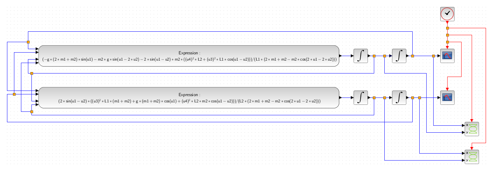

Modellezés és szimuláció
A tantárgy célja a hallgatókkal megismertetni a modellezési és szimulációs módszereket és eszközöket.
Aláírás feltételei:
- Az évközi zárthelyin kiadott tétel elfogadható szintű kidolgozása.
- Egy összetett önálló feladat megoldása és megvédése.
Ütemterv
- A félévi tematika és követelmények ismertetése. A rendszer értelmezése, rendszerek osztályozása. A modell definíciója, modellek fajtái és megadási módjai.
- Numerikus integrálási módszerek (Euler-féle, trapéz), előnyök és hátrányok.
- Matematikai modellek előállítása a Lagrange egyenlet segítségével. Rezgéstani és áramköri feladatok differenciálegyenleteinek származtatása.
- A szimuláció fogalma. A szimulációs vizsgálat lépései és felépítése egy példán keresztül (DC motor).
- A Simulink rendszer bemutatása, a legfontosabb szimulációs blokkok ismertetése.
- Ismerkedés a Scilab/Xcos szimulátorral. A tanult blokkok használatának gyakorlása. Paraméterátadás, az eredmények megjelenítése.
- Feladatmegoldás egy szabadságfokú mechanikai-, illetve villamos rezgőrendszeren.
- PID típusú szabályozás.
- A nemlineáris hatások figyelembevételének lehetőségei (Duffing egyenlet).
- Zárthelyi dolgozat.
- Eseményorientált szimuláció fogalma és eszközei.
- Mechatronikai rendszerek vizsgálata. Esettanulmány.
- Egyéni feladatok prezentálása.
- Pótzárthelyi dolgozat. Egyéni feladatok prezentálása.